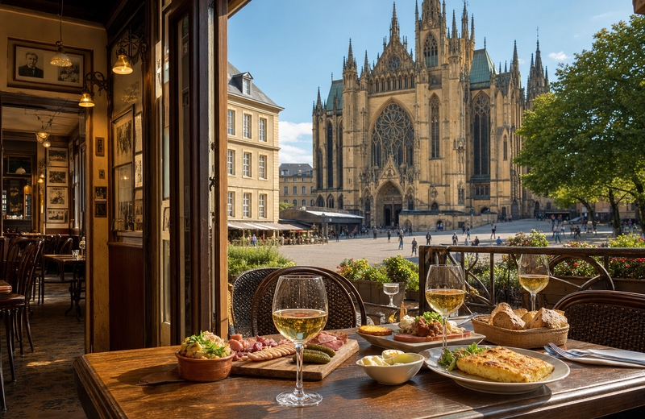

Le feu de la cuisine
Four à bois et casseroles en cuivre derrière le passe — la brigade d'Élodie Marchal mijote ici chaque service.

Bienvenue à la brasserie
Terrasse sur la place, mijotés au feu de bois et carte des vins mosellans.

Installée dans l'ancienne maison du maître d'hôtel de la gare impériale, la brasserie a survécu aux guerres en gardant son zinc d'origine.
Le chef Élodie Marchal revisite le patrimoine culinaire mosellan : quiche au cow-gomme et mirabelle en dessert.
Four à bois et casseroles en cuivre derrière le passe — la brigade d'Élodie Marchal mijote ici chaque service.
Zinc d'origine, presse mosellane et quarante-cinq références en cave — le comptoir où les Messins prennent leur café.

Face à la cathédrale, apéritif et tapas lorrains au soleil — la terrasse se remplit dès les beaux jours.


Carte renouvelée chaque semaine selon le marché Saint-Jacques.

Brioche perdue à la mirabelle — réservation conseillée.

Salon du premier pour 40 couverts.
Produits locaux, accueil sans chichi, cuisine sincère.
Réservez votre table — la terrasse se remplit vite.
Réserver